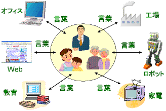

研究室紹介
■研究テーマ
本研究室では、人間の言葉をコンピュータで処理する自然言語処理という研究を行っています。 私たちの日常生活は言葉（自然言語）の使用によって支えられています。 これを機械で処理できるようになれば、機械（ロボット、情報家電など）と言葉を使って意思疎通ができる、 書物や文書ファイルの内容を自動的に解析して再利用できる、など、 今以上に多くの人が情報技術の恩恵を受けられるようになると期待されます。

自然言語はプログラミング言語などの人工言語と比べてはるかに複雑で、曖昧で、 また同じ言葉でも用いられる場面に応じて意味が変わる、いわゆる状況依存性を持ちます。 これらの難題に対処し実用的な自然言語処理システムを開発するには多くのアイデアと労力が必要となるため、 現在は単語やキーワードなど言語の表層的な特徴の一部分のみを取り出して簡便に処理する技術が主流となっています （例えば、キーワードに基づく Web 上の検索エンジン）。 しかし、言語の意味内容は本来、単語が有機的に結合して文を作り、文が連なって文章を作る過程で作り上げられるものですから、 このような技術だけでは限界があることは明らかです。
私たちの目標は、言語（文や文章）を単に「処理」するのではなく、その「意味」を「理解」する技術を開発することです。 そのために、言語学（言語のモデル）や人工知能（AI、知識や推論のモデル）の知見を取り入れながら、 言語の意味の計算モデルを構築することを目指しています。 さらに、自然言語処理には大規模で不規則な（文書）データを扱う工学としての側面もあり、 理論的なモデルが妥当なものであるかどうかシステムを実装して検証することが重要となります。 本研究室では、様々な領域を対象とした応用システムの開発を通して意味理解の研究にアプローチしています。
具体的な研究課題については、こちらのページを参照して下さい。
■研究室の活動
普段は毎週２回、次のようなゼミを行っています。
- 全体ゼミ
自然言語処理の教科書の輪読、文献紹介、研究の進捗報告など。
- グループゼミ
研究テーマごとに分かれて、研究の進め方に関してより突っ込んだ議論を行います。
研究グループの例：言語、対話、Web
■研究室配属について
本研究室は、次のような学生の皆さんに向いていると思われます。
- プログラミングが好き、またはスキルを磨きたい人
自然言語処理は (1) 文書や辞書など大規模なデータを扱う (2) 言語の意味という抽象的な構造を扱う (3) 処理は一筋縄で行かないので複数の手法を組み合わせる必要がある、などの理由からかなり手の込んだプログラミングが必要になる分野です。 そのため主にオブジェクト指向の考え方に基づいて、再利用性の高いプログラムを基礎から積み上げていくようなソフトウェア開発が求められます。
教員の指導を受けながらこのような開発を経験することにより、プログラミングのスキルが自然と上達することでしょう。
- 最先端の夢のある研究に取り組む意欲のある人
コンピュータが人間の言葉を理解し、人間と自在に対話できるようになる、という我々の最終目標は、困難ですが夢のある目標です。 人工知能（AI）の技術をフルに活用して、人間の知能の本質に迫る10年先、20年先を見据えた奥深い研究に挑戦しませんか？
関連授業科目： 自然言語処理、人工知能、数理論理学、形式言語とオートマトン、上級プログラミングなど
■研究室の場所
芝浦工業大学 豊洲キャンパス 研究棟１４階 C-32 アクセス方法